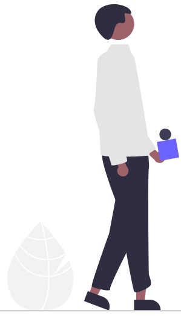
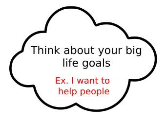
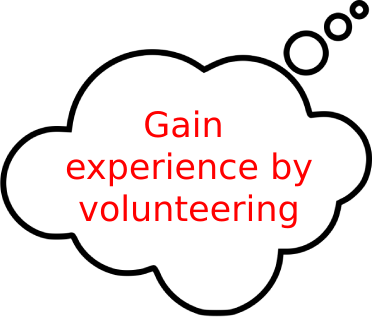

Setting goals can guide and motivate you.
In this section, we'll explore different types of goals and help you articulate your own personal goals.
You can take a standardized approach to goal setting. Let's start with an example. Click on the thought bubbles to set goals.


